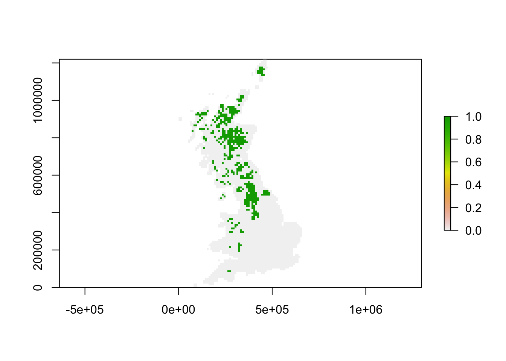
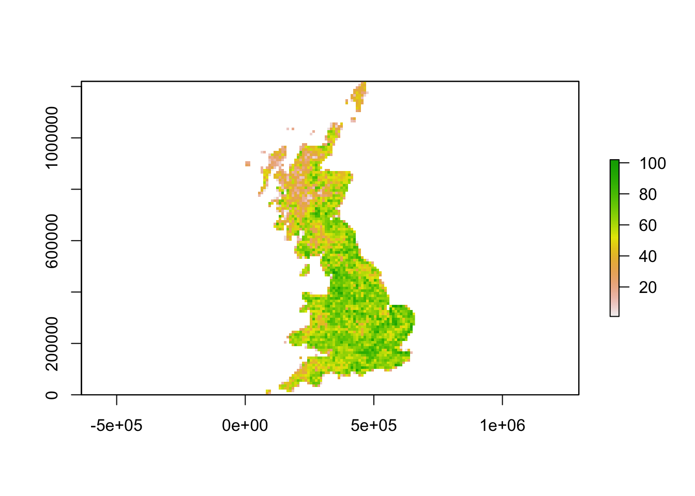
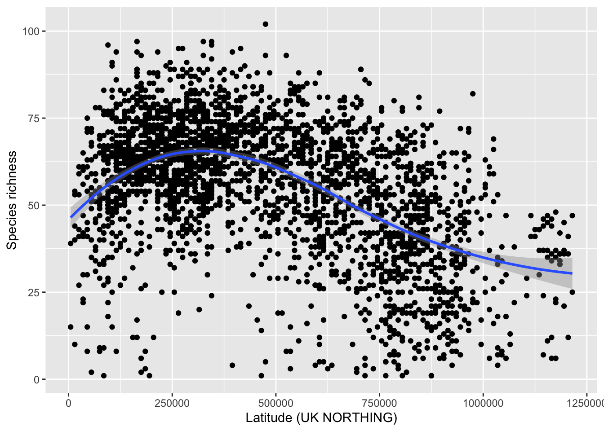
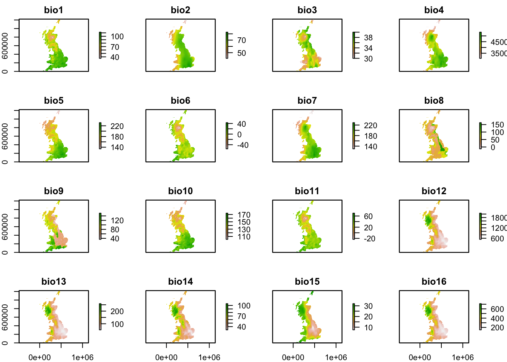
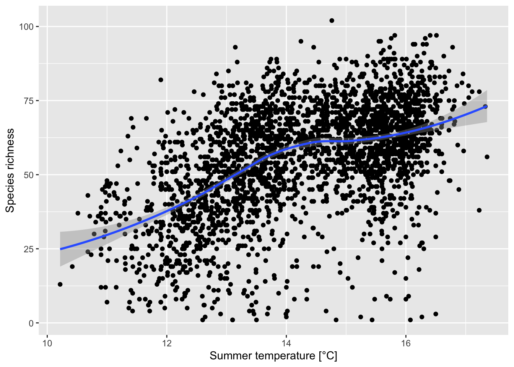

RStudio project
Open the RStudio project that we created in the first session. I recommend to use this RStudio project for the entire course and within the RStudio project create separate R scripts for each session.
# Session 3: Species richness gradients and save the file in your folder “scripts” within your project folder, e.g. as “3_RichnessGradients.R”Today, the aim is to run your own first analyses of biodiversity patterns based on the data handling skills that you have learned in the previous sessions. In contrast to most of the course practicals, I do not provide a full script here but rather want to encourage you to code your analyses yourself.
All analyses of today will be based on a dataset of British breeding and wintering birds recently made available by Gillings et al. (2019). The original data contain breeding bird records in 20-year cycles (1968-1972, 1988-1991, 2008-2011) and wintering bird records in 30-year cycles (1981/1982-1983-1984, 2007/2008-2010/2011) at a 10 km spatial resolution throughout Britain, Ireland, the Isle of Man and the Channel Islands. Some rarer species are represented at 20 or 50 km resolutions. Here, we will concentrate on bird records from Britain at 10 km resolution during the breeding seasons 2008-2011. The original data are available through the British Trust of Ornithology (www.bto.org; direct download here). To simplify matters, I have already filtered the data to contain only the relevant breeding records. These cleaned data are available here. Please download the data and save them in an appropriate folder (e.g. in data folder).
We can now read in the data into R.
# Read in the distribution dataset:
bird_dist <- read.table('data/UK_BBatlas_2008.csv',header=T, sep=',', stringsAsFactors = F)Let’s take a first look at the data and find out what information is contained in there.
str(bird_dist, list.len=10)## 'data.frame': 2833 obs. of 230 variables:
## $ grid : chr "HP40" "HP50" "HP51" "HP60" ...
## $ EASTING : int 445000 455000 455000 465000 465000 395000 395000 415000 415000 415000 ...
## $ NORTHING : int 1205000 1205000 1215000 1205000 1215000 1135000 1145000 1145000 1155000 1165000 ...
## $ Gavia_stellata : int 0 1 1 1 1 1 1 0 1 1 ...
## $ Gavia_arctica : int 0 0 0 0 0 0 0 0 0 0 ...
## $ Tachybaptus_ruficollis : int 0 0 0 0 0 0 0 0 0 0 ...
## $ Podiceps_cristatus : int 0 0 0 0 0 0 0 0 0 0 ...
## $ Podiceps_nigricollis : int 0 0 0 0 0 0 0 0 0 0 ...
## $ Fulmarus_glacialis : int 1 1 1 1 1 1 1 0 1 1 ...
## $ Puffinus_puffinus : int 0 0 0 0 0 0 0 0 0 0 ...
## [list output truncated]The data frame contains 230 columns of which the first three columns describe the grid reference and coordinates. The coordinates are provided in the British National Grid, with grid letters and grid digits. The British National Grid is based on a transverse Mercator projection, and the grid letters and grid digits can easily be converted into the so-called Easting and Northing coordinates. All other columns contain presence and absence data of 227 bird species for the breeding seasons 2008-2011. The data contain only species presences with probable or confirmed breeding. The column names are the latin species names.
Let’s plot the spatial distribution of the Willow ptargmigan (Lagopus lagopus). As the data are provided for all grid cells in Britain without any holes, we can use the convenient rasterFromXYZ() function in the raster package for converting the data frame into raster data.
library(raster)
# The coordinate reference system for the UK National Grid is:
proj_UK <- '+proj=tmerc +lat_0=49 +lon_0=-2 +k=0.9996012717 +x_0=400000 +y_0=-100000 +ellps=airy +datum=OSGB36 +units=m +no_defs'
r_ptarmigan <- rasterFromXYZ(bird_dist[,c('EASTING','NORTHING','Lagopus_lagopus')], crs=proj_UK)
plot(r_ptarmigan)
I would like you to map the species richness of breeding birds in Britain. As you have seen, your data frame contain presence and absence records for all breeding bird species for each 10 km cell in Britain. For this, you first have to sum up the number of bird species present at any location. For example, use the rowSums() function from session 1. But be careful to only sum up the columns containing species records, not the columns containing coordinates. In the end, you will need a data frame or matrix containing the coordinates and the species richness per cell like this:
## EASTING NORTHING richness
## 1 445000 1205000 12
## 2 455000 1205000 41
## 3 455000 1215000 25
## 4 465000 1205000 36
## 5 465000 1215000 47
## 6 395000 1135000 43Then, you can use the rasterFromXYZ() function from above to convert this new data frame into a raster object and map this. You should receive a map similar to this:

How is bird species richness distributed in Britain?
Summary Task 1: Map species richness
As we have discussed in the Macroecology lecture, we can analyse different aspects of spatial patterns in species richness. For this, please revisit the article by (Gaston 2000). I would then like you to plot the latitudinal species richness gradient, potentially including a smoothing line to see the general trend:

Compare your latitudinal richness gradient with (Gaston 2000) and discuss.
Summary Task 2: Plot latitudinal species richness gradient
Gaston (2000) also presented species-energy relationship and I would like you to plot such a relationship for British breeding birds, for example the relationship between species richness and annual temperature. For this, you will have to join the species richness data with climatic data. For convenience, I have already processed worldclim data (19 bioclimatic variables) for you such that the raster stack is projected in the British National Grid at 10 km spatial resolution. You can download the raster stack data here. Please save it in an appropriate place (e.g. your data folder), unzip it and load the raster stack data into your working space. Your climate layers should look like this:

Next, I would like you to plot the relationship between species richness and summer temperature. To this end, you will have to extract the climate data for all cells in Britain and join these with the species richness data. Also, you should look up the definition of the bioclimatic variables again. All information for this task can be found in Session 2 on Spatial data.

Compare this species-energy relationship with (Gaston 2000) and discuss.
Summary Task 3: Plot species-energy relationship
Gaston, Kevin J. 2000. “Global Patterns in Biodiversity.” Nature 405: 220–27. https://doi.org/10.1038/35012228.
Gillings, Simon, Dawn E. Balmer, Brian J. Caffrey, Iain S. Downie, David W. Gibbons, Peter C. Lack, James B. Reid, J. Tim R. Sharrock, Robert L. Swann, and Robert J. Fuller. 2019. “Breeding and Wintering Bird Distributions in Britain and Ireland from Citizen Science Bird Atlases.” Global Ecology and Biogeography 28 (7): 866–74. https://doi.org/10.1111/geb.12906.